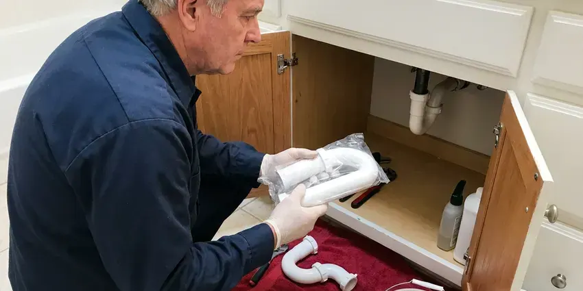

Toilet Installation in Mansfield, OH
HRL Plumbing sets toilets in Mansfield, OH on a new seal with stainless bolts, then flush-tests it several times before we pack up.
- Rough-In Checked Before We Set
- Same-Day Installs Available
- All Major Toilet Brands
- Flat Labor Pricing

Ready to Swap That Old Toilet in Mansfield, OH?
Cracked tank or a toilet that never stops running? We can set a new one, often the same day.
Toilet Installation for New and Remodeled Baths in Mansfield, OH
Licensed plumbers from HRL Plumbing set toilets in Mansfield, OH for remodels, additions, rentals and plain old replacements. What matters most sits under the bowl. That means a flange screwed down to solid subfloor or concrete, closet bolts that are brass or stainless instead of plated steel, and a seal sized for the gap between the horn and the flange. Get those right and the toilet stays dry for decades.
Work we handle every week:
- Closet flange repair and replacement
- In-wall carrier and concealed tank systems
- Two-piece and one-piece toilets set level

Additional Bathroom Plumbing Services in Mansfield, OH
From toilets to showers, our bathroom plumbing team in Mansfield, OH repairs, installs, and replaces every fixture with clean, code-compliant work.


Customers
Why Choose HRL Plumbing for Toilet Installation in Mansfield, OH?
New tile and fresh paint call for a careful crew. Drop cloths go down from the door to the bathroom. The old toilet leaves in a contractor bag so nothing drips on the way out, and we haul it off along with the boxes and packing foam. The base gets a clean bead of caulk.
- Durability, Stainless bolts and braided supply lines hold up far longer than plated steel and vinyl.
- Correct Rough-In, We measure 10, 12 or 14 inch rough-ins from the finished wall before the toilet is ordered.
- Clean Work, Drop cloths down, old toilet bagged, and the bathroom cleaned before we leave.
Citywide Coverage
Distance across Mansfield does not change how we set a toilet. Every flange gets inspected first. A condo near downtown and a house on the edge of town both get stainless closet bolts and a five-flush test before we pack up the truck.
Experienced Team
The HRL Plumbing team is licensed in Ohio and trained on one-piece, two-piece, wall-hung and pressure-assisted toilets. Each type sets a little differently. A one-piece can weigh 90 pounds or more, and two people lower it so the seal does not get smeared sideways.
Safety-First Approach
A toilet that leaks at the base leaks wastewater, not clean water. That is a sanitation problem. Every bowl goes on a new seal over a flange screwed to solid material, and we check the base with a dry paper towel after several flushes.
Trusted Certified Mansfield Plumbing Services Professionals
At HRL Plumbing, we are proud to offer certified plumbing services throughout Mansfield, OH. Those papers on the wall mean something. Every repair, install and maintenance visit follows strict safety and quality rules, and the plumbers doing the work carry recognized industry credentials.
Call Us Now PHCC Plumbing Contractor Recognition
PHCC Plumbing Contractor Recognition Better Business Bureau (BBB) Accreditation
Better Business Bureau (BBB) Accreditation Angi Certified Pro
Angi Certified Pro ISO 9001 Quality Management Certification
ISO 9001 Quality Management CertificationTypes of Toilet Installation in Mansfield, OH
Urgent Toilet Replacement in Mansfield
A cracked tank or a bowl leaking at the base cannot wait for next week, especially in a house with one bathroom. Standard two-piece toilets ride on our trucks. Often the broken unit comes out and a 12 inch rough-in replacement goes in during the same trip, round or elongated. Close the stop until then.

New Construction Toilet Installation in Mansfield
On new builds we set toilets after the finish floor is down, never before. The flange should sit on top of the finished floor. An early set means the tile goes around the flange, leaving it low, and that calls for an extender ring later. Each bowl gets a fresh seal.
ADA-Compliant Toilet Installation in Mansfield
ADA toilets put the seat 17 to 19 inches off the floor, and the centerline sits 16 to 18 inches from the side wall. That spacing leaves room for a grab bar. Before anything is ordered we measure the drain, because shifting it to meet the ADA centerline means cutting into the floor. Elongated bowls are standard here.
Comfort Height Toilet Installation in Mansfield, OH
Comfort height bowls stand about two inches taller than standard ones. Think about who will use it before you buy. Kids and shorter adults may not like their feet off the floor, but people with sore knees or a new hip usually love the extra height. Installation is the same as a standard bowl.
Comfort-Height and ADA Toilets in Mansfield
Aging in place usually starts in the bathroom. A grab bar and a taller bowl help a lot. While the wall is open, we add 2 by 6 blocking between the studs at grab bar height, so the bar can later be screwed into solid wood instead of drywall anchors that pull loose. We also center the bowl to ADA spacing.
Commercial Restroom Toilets in Mansfield, OH
Restaurants and offices get heavy-duty fixtures and accessible stalls built to code. A closed restroom costs a business money. Work gets scheduled before opening or after close, with fixtures staged on site, so each stall is out of service only briefly. We work with your GC on inspections.
Pressure-Assisted Toilet Installation in Mansfield
Pressure-assisted toilets have a sealed vessel inside the tank that uses line pressure to push the flush. Below about 20 psi, they flush poorly. Before suggesting one, we put a gauge on a hose bib, and we mention the noise, because the flush carries through the whole house. They rarely clog.

Low-Flow WaterSense Toilet Installation in Mansfield, OH
WaterSense toilets are capped at 1.28 gallons per flush, and some dual-flush models drop to around 0.8 for liquid waste. It adds up quickly. A family of four swapping one old 3.5 gallon toilet can save thousands of gallons a year, and some water providers offer rebates worth checking. Pick a strong MaP rating.
Local Toilet Installation in Mansfield, OH
Searching for toilet installation near me in Mansfield, OH usually means a bathroom is out of commission or a remodel is waiting on the plumber. A next-day visit is common. Every truck is stocked with seals, bolts, flange rings and supply lines, which covers most installs in one visit.
Older Mansfield homes can hide surprises under the toilet, like a cast iron flange rusted thin or a subfloor gone soft from an old leak. We check for both before setting anything. Soft plywood around the flange gets cut out and replaced with new subfloor, glued and screwed, so the toilet sits on something solid. It adds an hour, sometimes two.
HRL Plumbing at a Glance
- Fully licensed plumbing team covering Mansfield, OH
- 24/7 emergency service with same-day scheduling
- Clear written estimates, no hidden fees
- 4.9-star rated by 673+ Ohio customers
Mansfield Map
Mansfield Information
- Population
- 47,711
- Area codes
- 419/567/330
- Service area
- Mansfield and towns within a 40 mile drive
- Nearby
- Elyria, Newark, Lorain, Dublin
Cold winters and hot, humid summers give Ohio plumbing a wide range of seasonal stress from one year to the next. A new toilet in a Mansfield, OH home should sit flat on the floor, with no daylight under the base and no give when you sit. Anything less leaks eventually.
Talk to a Plumber
Reach out to HRL Plumbing for reliable plumbing work done by licensed pros in Mansfield, OH.
Our Specialized Plumbing Services in Mansfield, OH
At HRL Plumbing, we handle the full list of plumbing services across Mansfield, OH. We go from leak detection all the way to full system installations, for homes and commercial buildings, and we do it quickly at a fair price. Take a look at our core services below:


How a Toilet Installation Goes in Mansfield, OH
Measure, prep, set and test. That is the whole process, and here is what each step involves.
Request a Quote
Tell us about the bathroom and the toilet on the phone at (740) 449-7505. We will ask for the rough-in measurement.
Old Toilet Removal
With towels down, we disconnect the supply, unbolt the bowl and stuff a rag in the open drain so sewer gas stays out.
New Toilet Setup
New seal, new bolts, a level bowl and a tank tightened evenly on both sides. Then we fill it and check every joint for drips.
Frequently Asked Questions About Toilet Installation in Mansfield
Setting a customer-supplied standard toilet usually costs $200 to $400 in labor. Add a mid-range toilet and the total is usually $450 to $900. Wall-hung systems with an in-wall carrier run $1,500 to $3,500 or more, mostly because the wall has to be opened, framed for the carrier and finished again afterward. We quote a flat price.
For a replacement in the same spot, usually no. New bathrooms and additions usually do. Requirements differ by jurisdiction, so we call the building department first and pull the permit when the job needs it. That cost goes on the quote.
Much of Ohio has hard water, which leaves scale in water heaters, clogs aerators and cuts the life of appliances. Hard water leaves scale in the rim jets and on the fill valve over time. Flush power drops as jets clog. A toilet with a well-glazed trapway and an easy-to-reach fill valve holds up better, and a cup of vinegar left in the overflow tube overnight now and then keeps the rim jets open.
Cracks in the tank or bowl are the clearest sign. Hairline cracks can be hard to spot. Watch for a puddle that keeps returning or constant clogs on an early low-flow bowl with a narrow trapway. So is a toilet you have rebuilt twice in three years.
We guarantee the workmanship on every toilet we set. A leak from our work gets fixed free. That covers the seal and the supply connection, while manufacturing defects in the toilet fall under the maker's warranty, which we help you file if a part fails early. Hang on to your receipt.
Figure one to two hours for a standard floor-mount toilet. Some jobs run a full day. Wall-hung carriers and slab relocations open walls or floors, so they get booked as separate projects with cure time built in.
Plenty of handy homeowners do. The common mistakes are overtightened bolts and a bowl that was never leveled. A cracked foot from overtightening can show up days later, and a rocking bowl lets water soak the subfloor out of sight. On new floors or wall-hung units, hire it out.
It is a toilet with the seat about 17 to 19 inches off the floor, roughly chair height, compared with 15 inches or so on a standard bowl. Most adults find it easier on the knees. Children and shorter people may find their feet dangle, so for a family bath a standard height with a grab bar can be the better call.
Hear From Customers Who Hired Our Plumbing Experts

Rachel N.
Hard water was leaving white crust on every faucet and our dishwasher was struggling. The tech tested the water, recommended a softener sized for a family of five, and installed it with a bypass valve in one afternoon. The spots on our glasses are gone.
Water Softener · Dublin, OHEmily R.
The shutoff valve under our kitchen sink snapped off in my hand on a Sunday morning. HRL Plumbing had someone out by early afternoon. He replaced both angle stops with quarter turn valves and showed me where our main shutoff was, which I honestly did not know.
Plumbing Repair · Akron, OHMegan L.
Our upstairs tub drained so slowly that every shower turned into a bath. HRL Plumbing pulled a wad of hair out of the stopper and then snaked the line past the trap. Three months later it still drains fast.
Drain Cleaning · Elyria, OH
Sofia M.
Two new toilets went in during one visit. The tech set them on new wax rings and swapped the old supply lines. He also noticed our bathroom faucet dripping and replaced the cartridge while he was there. No mess left behind.
Toilet Installation · Newark, OH
Carlos V.
Our house still had galvanized pipe, and upstairs the shower was a trickle. The crew repiped everything in PEX over three days and patched every drywall hole before they left. The pressure difference is night and day.
Repiping · Lorain, OHDaniel K.
A pipe burst in the garage ceiling at 11 at night. Someone answered on the second ring, and the plumber was in my driveway about fifty minutes later. He shut off the main, cut out the split section, and had water back on before 2 am.
Emergency Plumbing · Lorain, OH